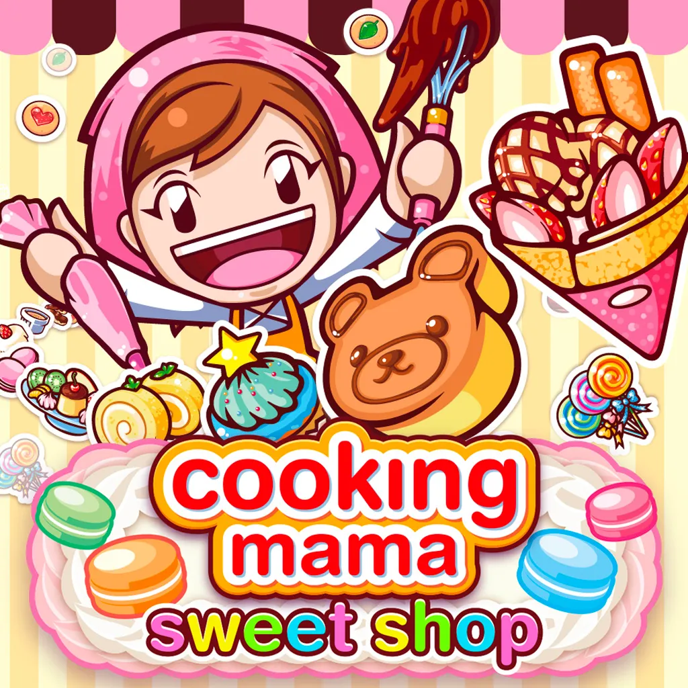
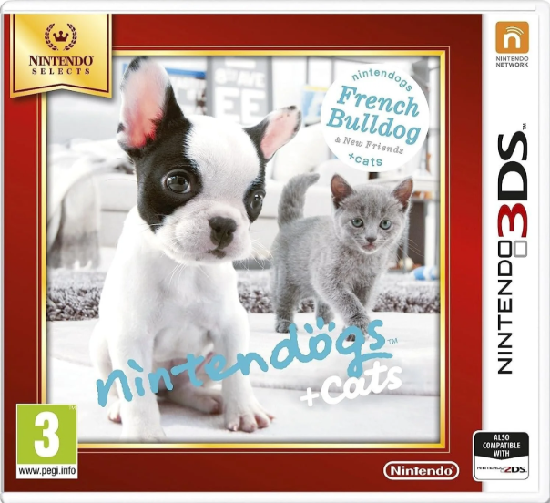
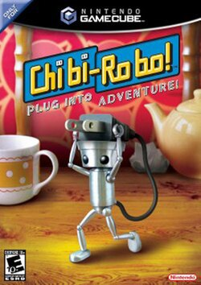
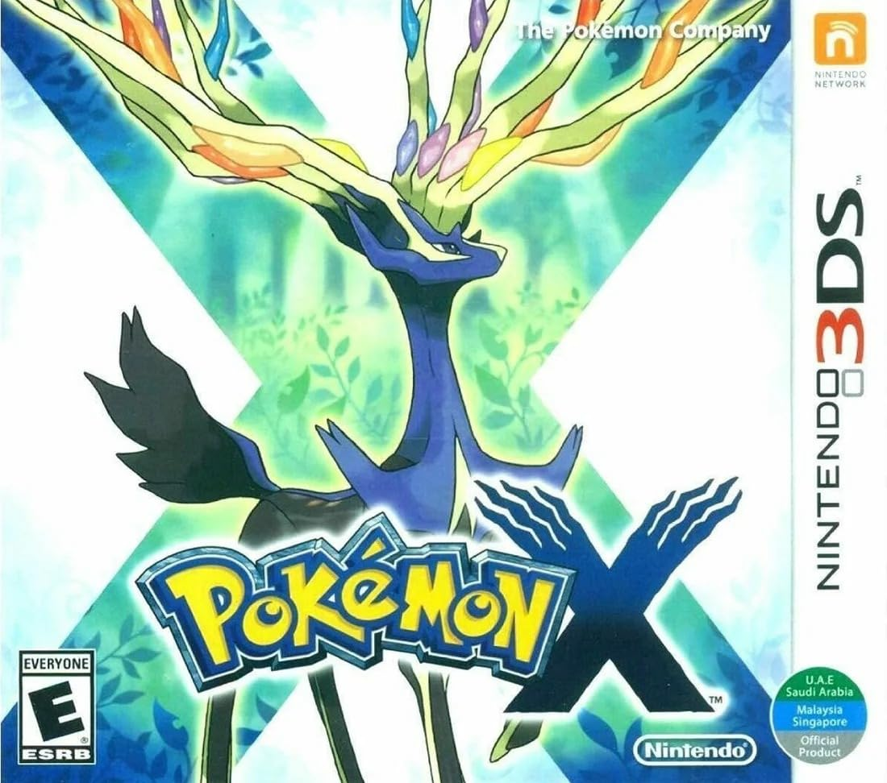
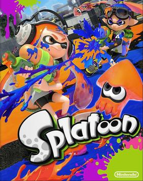
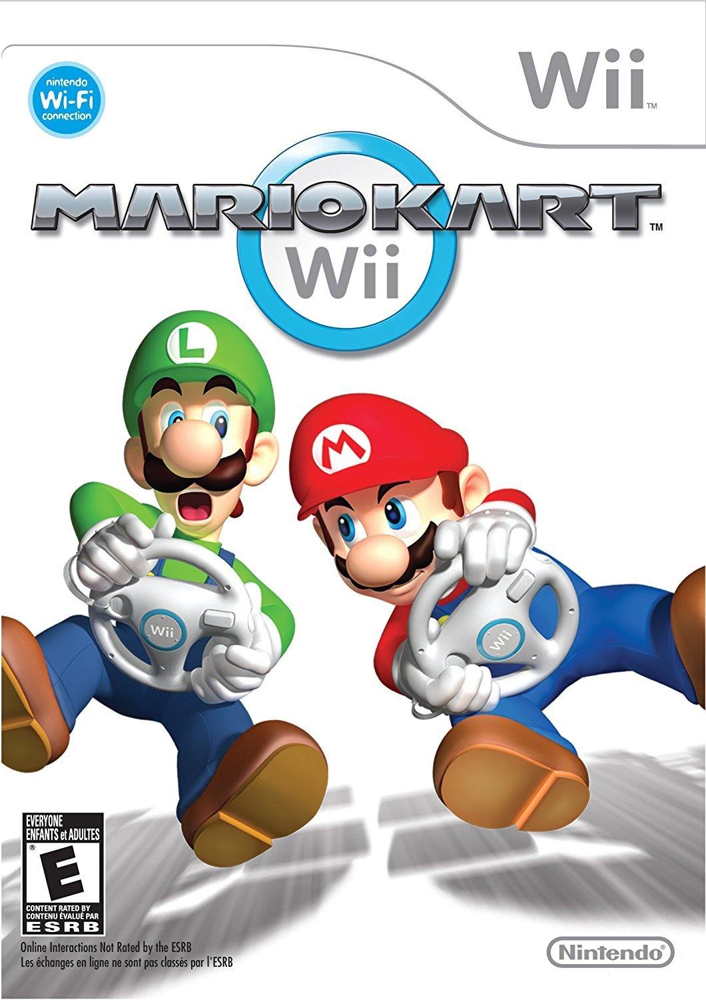
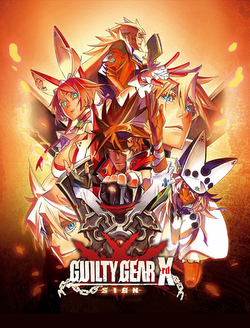
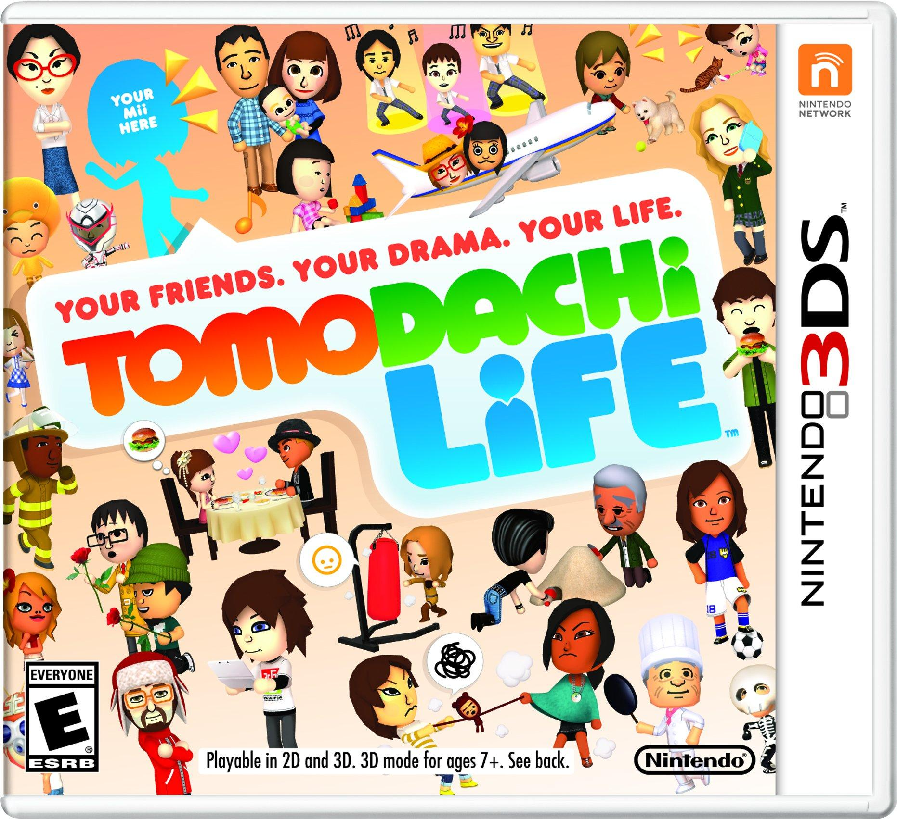
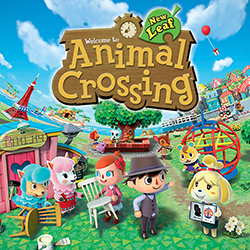

In 10th Place...
Cooking Mama: Sweet Shop
From this list, you will soon be able to tell what console I played most on as a child! (Spoiler alert, it was a Nintendo 3DS.) I had a ton of games from the Cooking Mama series as a kid, mostly for the Wii, DS, and 3DS! However, this is one of the titles that I was able to recall the name of properly, and the gimmick of this game stuck with me as well!
Cooking Mama is a cooking simulation game where you pick a recipe, and complete every cooking step in the form of minigames! How well you score on each of these minigames will determine how high you score on the quality of your dish. This game had a fun gimmick of everything you cook being a sweet recipe, rather than a savory-dominated menu. Not only that, but it was more advanced than previous titles, as you had an additional objective of running and managing your own sweet shop! This title came out in 2017, but Cooking Mama has always been a very beloved series to me, and it would be criminal to not mention the francise at least once on this list!

In 9th Place...
Nintendogs + Cats
Nintendogs was actually what got me absolutely obsessed with the 3DS, I had a friend in elementary school who would bring her console to recess sometimes. She was a sweetheart and let me feed and talk to her dogs on her save every once in a while when the teachers weren't looking at us, and though it was always short I became obsessed with the virtual puppies and kitties. Eventually I saved about $200 cash to get my own, and here we are today looking back on it!
In Nintendogs, you are able to adopt and care for up to six cats and dogs! You name them and interact with them via the microphone, this feature allowed you to teach them tricks with verbal commands just like with real life pets! After a certain amount of training you could have them compete against other dogs in-game, and win rewards if your fluffy friend won! Overall a very calm and cute game that kept me engaged for hours.

In 8th Place...
Kingdom Hearts
Kingdom Hearts released for the PS2 in 2002, making this game older than me! I obviously didn't play this game until about 7 years after it came out, and I played it on my Dad's PS2 since I was way too young for my own! Despite how long ago I learned about Kingdom Hearts, I still remember a lot of what happens in the games, and it remains dear to my heart! (Unintentional pun, hehe.)
Kingdom Hearts is a sort-of crossover franchise, developed by Square Enix and owned by Disney. There are characters from both Disney and Square Enix media, mostly dominated by Disney characters, and also contains a good mix of original characters for the series! You play as a young boy separated from his two best friends while the world is under attack, and it's your goal to travel through different worlds from different Disney movies to try and find them, getting help from beloved characters along the way. It's a wonderful game and the music is absolutely amazing, if you've never played Kingdom Hearts, you should absolutely seek it out!

In 7th Place...
Chibi-Robo!
An amazing game with a super controversial sequel (that I personally don't like,) Chibi-Robo for the GameCube! Now I have never owned a GameCube, and the only Wii releases of this game exist purely in Japan and are reigon locked... luckily for me, GameCube discs actually work in Wiis! And thank god they do, because this game is so cute and it would be sad if I never had the ability to replay it!
In Chibi-Robo, you play as a tiny robot named Chibi-Robo who's job is to make others happy, mostly from little tasks like cleaning up and giving gifts. You were purchased as a gift for a young girl's birthday, and it turns out the family that bought you has a TON of problems that you, Chibi-Robo, can solve for them! It's a very cute game with a lot of lovely little characters and plot lines, if you enjoy games that are full of story and childlike-joy, I would play this game. Just don't play the game they released for the 3DS unless if you're looking for a platformer.

In 6th Place..
Pokémon X
My very first Pokémon game, Pokémon X kind of changed my brain chemistry, and I mean that in a very good way. I LOVED this game, and it sparked my future interest in other Pokémon games!
Pokémon X dropped alongside Pokémon Y back in 2013, and were the first mainline games in the series to be fully 3D! The story and gameplay are honestly pretty standard in terms of Pokémon games, you're a young Pokémon trainer that goes on to ruin the plans of the criminal group called "Team Flare." While the story may be somewhat typical for a Pokémon title, this game was still insane amounts of fun and I seriously don't think I could've gotten luckier for my first Pokémon game. If you haven't played any of these games and you're looking for a very chill and fun experience, try Pokémon X or Y! The best part about these games is that if you don't have a 3DS, it is one of the easiest things to emulate!

In 5th Place..
Splatoon
Other than WarioWare, this is actually the only Wii-U game that I love! I actually like the future titles more, Splatoon 3 being my absolute favorite Splatoon game, but the future titles sold mostly digitally. So instead, we will just be listing the original here!
Splatoon actually has some rather vast lore, but Splatoon has both a storymode and an online-multiplayer mode. In the storymode, you play as an agent going through various puzzles and fighting enemies with your ink in order to progress and retrieve a power supply that was stolen from your city. In online-multiplayer mode, you would engage in 4 player vs 4 player battles, and much like current-day Splatoon, you could rank-up and get more valuable items and weapons from engaging in public battle! Splatoon servers have been down for a while, but I look back very fondly on this game.

In 4th Place..
Mario Kart: Wii
It's hard to recall, but this may have been the first video game I ever played. It's either that or Wii Sports, but this is really where it all started! There are many Mario Kart games, but even today this one still remains my favorite!
Like the other Mario Kart titles, this is a racing game that has many different characters in it's roster from other Nintendo games, as well as the different racing maps! There isn't much to get into about this game, there isn't much content per se but it has a TON of replay value, and can still be played with friends if you have multiple controllers! I mostly remember how amazing the OST is, every track is iconic, and all of the maps have a really lovely feel to it. Amazing game, best played with friends or family, if you still have a Wii you should get it!

In 3rd Place..
Guilty Gear Xrd -Sign-
If you know me personally, you know that there's one thing I can never shut up about: and that is Guilty Gear. This is the second most recent title in the Guilty Gear franchise, and actually first released exclusively on arcade machines. But Guilty Gear is insanely popular, and like all previous titles, would eventually be compatible with all consoles and PC.
Guilty Gear is a franchise of anime fighting games, akin to Tekken or Street Fighter. It takes place in a world where humans and monster-eqsue humanoid people called "Gears" fought a vicious war, and you are witnessing the aftermath via the storymode, or cutscenes in-between battles. While it isn't as popular as it used to be, this game's servers are still up and there are still some players that go online frequently, so you can play this online even today!

In 2nd Place..
Tomodachi Life
Ah, Tomodachi Life... this game consumed so much of my life after it came out. Despite what some people like to say, this is actually the second game in the Tomo-Life franchise, and arguably still the most popular, according to some people!
This game utilizes Mii characters, you make a bunch of Mii's to live on your island and take care of them! You can give them gifts, feed them, change up their home, and give them songs to sing. While taking care of them is a lot of fun, there's something that doesn't include your input that's just as fun... watching your Miis develop relationships with each other! Every time you log on, there's some new drama or romance to come back to and catch up with. Unfortunately I lost my cartridge of this game very recently, but I am determined to find it so I can keep playing!

Finally, in 1st place...
Animal Crossing: New Leaf
Last but certainly not least, Animal Crossing: New Leaf. This game, without a doubt, is the absolute best game out of every other title in the franchise. You play as a human who was meant to just be a villager in the new town that you're moving to, but when you arrive there's a bit of a mixup... and now you're the new mayor!
There's so much to do in this game, you get to decorate and clean up the town, collect fossils, bugs, fish, artwork and tide-pool animals to donate to the meuseum, curate friendships between yourself and the townsfolk, and seriously so much more! Even outside of gameplay, this game charms me so heavily. The soundtrack is probably the best soundtrack from any game ever created, the feelings of the game are expressed so well through the music. I didn't think songs could sound warm and cozy, but they managed to do it in New Leaf. The graphics make the game insanely cute, and every design in the game fits into the world beautifully. I love this game, and that is a massive understatement.